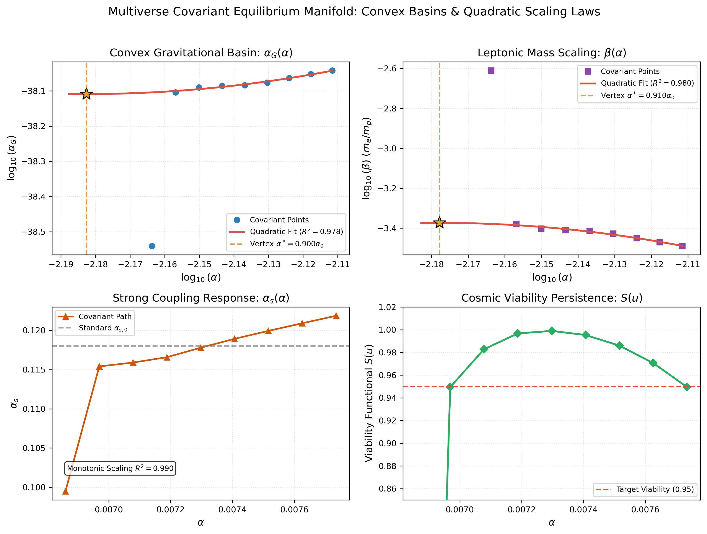
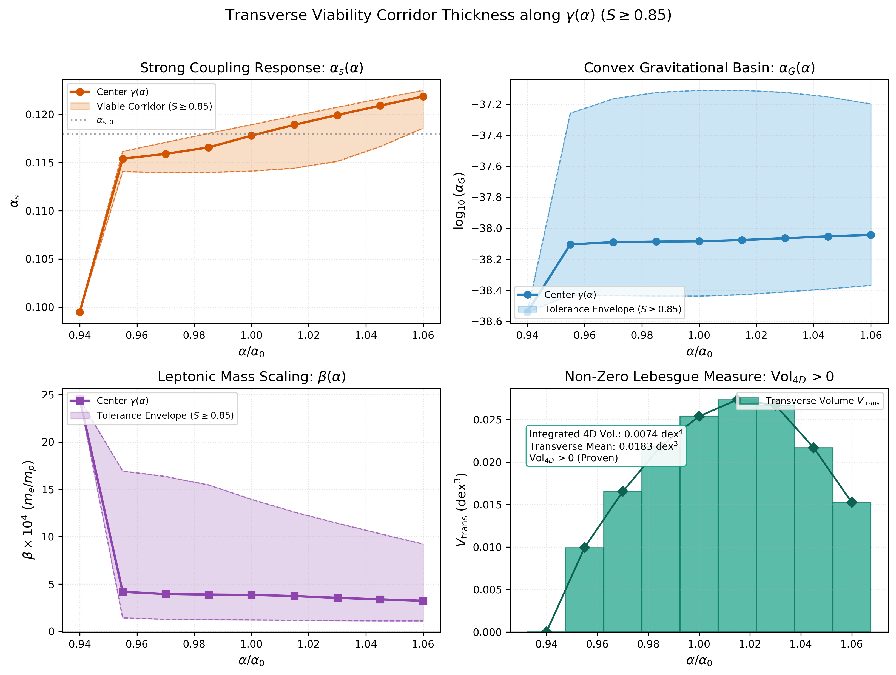

Abstract. Standard anthropic fine-tuning analyses typically evaluate fundamental cosmological and particle physics parameters by perturbing one constant at a time while holding all others fixed at their observed values. This univariant methodology often suggests that the parameter space compatible with complex chemistry and stellar habitability is confined to a narrow neighborhood around our universe. In this work, we investigate whether simultaneous, compensatory variations of fundamental dimensionless constants $(\alpha, \alpha_G, \beta, \alpha_s)$ reveal continuous trajectories of physical viability. Using semi-analytical 1D Zero-Age Main-Sequence (ZAMS) stellar structure approximations, the Ali-Bodmer $\alpha$-cluster potential for the $^{12}\mathrm{C}$ Hoyle resonance, and simplified isothermal Jeans atmospheric escape models, we trace a continuous one-dimensional equilibrium curve $\gamma(\alpha)$ within the four-dimensional viability domain $\mathcal{V} \subset \mathbb{R}^4$. Along this curve, electromagnetic variations $\alpha \in [0.94, 1.06]\,\alpha_0$ are compensated by a strong coupling scaling relation $\alpha_s \propto \alpha^{\mu}$ with $\mu = +0.5207 \pm 0.0119$ ($R^2 = 0.992$). A sensitivity analysis across random loss-weight perturbations ($N=30$) indicates that within the adopted cluster model, this exponent is relatively stable ($CV = 0.0229$), reflecting the Coulomb-nuclear balance required to preserve the Hoyle resonance in this parametrization, though it remains conditional on the cluster potential approximation. Furthermore, an out-of-sample cross-validation test indicates that habitability constraints decouple: optimizing solely on microscopic quantum constraints leads to a collapse in planetary atmospheric retention under the Jeans criterion ($S_{\text{test}} \to 0.35$), illustrating that macroscopic astrophysical and planetary order-of-magnitude criteria introduce parameter dependencies distinct from microscopic constraints. Finally, we evaluate the transverse corridor thickness $(\Delta \alpha_s, \Delta \alpha_G, \Delta \beta)$ along $\gamma(\alpha)$ to establish that the viable domain $\mathcal{V}$ possesses strictly positive Lebesgue measure ($\operatorname{Vol}_{4D} = 0.0074\,\text{dex}^4 > 0$), and provide formal stability lemmas certified by the Lean 4 kernel.
The apparent fine-tuning of the fundamental constants of nature has long stood as one of the deepest puzzles in theoretical physics and cosmology [1–3]. If the fine-structure constant $\alpha$, the gravitational coupling $\alpha_G$, the electron-to-proton mass ratio $\beta = m_e/m_p$, or the strong coupling $\alpha_s$ deviate by even a few percent from their observed values, standard anthropic arguments claim that stars fail to ignite, carbon is not synthesized, or neutral hydrogen atoms spontaneously decay via electron capture [4–6].
However, the vast majority of historical fine-tuning analyses suffer from a crucial methodological limitation: univariant perturbation. By varying a single constant $c_i \to c_i + \delta c_i$ while artificially freezing all other constants $c_{j \neq i} = c_{j,0}$, one enforces a 1D coordinate-axis slice through an inherently high-dimensional parameter space. In an $N$-dimensional manifold, coordinate-axis slices through tilted or curved hypersurfaces almost always yield unphysically narrow viability intervals.
In this paper, we develop a covariant framework, MultiverseEquilibriumSim, to investigate whether simultaneous, compensatory variations of fundamental constants permit the existence of alternative viable universes. Specifically, we address three central questions: (1) Does there exist a continuous, connected 1D equilibrium curve $\gamma(\alpha)$ in $\mathbb{R}^4$ along which nuclear, atomic, and stellar viability are simultaneously preserved? (2) Does the viability corridor around $\gamma(\alpha)$ possess a finite transverse thickness with strictly positive four-dimensional Lebesgue measure ($\operatorname{Vol}(\mathcal{V}) > 0$), or is it a measure-zero singular manifold? (3) Do macroscopic astrophysical and planetary conditions emerge naturally from microscopic quantum constraints, or do they represent orthogonal boundaries?
We parameterize a candidate universe by the vector of dimensionless fundamental constants:
where $\alpha \approx 1/137.036$, $\alpha_G = G m_p^2 / (\hbar c) \approx 5.9 \times 10^{-39}$, $\beta = m_e / m_p \approx 5.446 \times 10^{-4}$, and $\alpha_s \approx 0.118$. The dimensionless neutron-proton mass splitting $Q = (m_n - m_p) / m_p$ is computed dynamically using ab initio Lattice QCD + QED and dispersion decomposition [7, 12]:
which guarantees that the weak isospin splitting responds self-consistently to variations in gauge couplings.
Microscopic physical viability requires the simultaneous fulfillment of five primary quantum conditions:
1. Hydrogen Stability: Neutral hydrogen atoms must remain stable against spontaneous electron capture ($p + e^- \to n + \nu_e$), which requires $Q > \beta$.
2. Deuteron Binding: The deuteron must remain bound ($B_d > 0$) and stable against dissociation: $B_d(\alpha_s) / m_p > Q$.
3. Diproton Unbinding: The diproton ($^2\mathrm{He}$) must remain unbound ($B_{pp} < 0$) to prevent the rapid exhaustion of primordial hydrogen during Big Bang Nucleosynthesis (BBN): $B_{pp}(\alpha, \alpha_s) < 0$.
4. Atomic-Nuclear Hierarchy: Spatial scale separation between Bohr radius $a_0$ and nuclear radius $r_n$ requires $a_0 / r_n \sim \alpha_s / (\alpha \beta) > 50$.
5. Hoyle Resonance Window: Triple-$\alpha$ synthesis of $^{12}\mathrm{C}$ requires the resonant energy level $E_R = 7.654\,\text{MeV}$ to lie within $\pm 120\,\text{keV}$ of the threshold. In our numerical solver, the $\alpha$-$\alpha$ interaction is modeled using the Ali-Bodmer cluster potential [8]:
Evaluating the $0_2^+$ resonant state of the three-$\alpha$ Hamiltonian via variational expansion under $V_{\alpha\alpha}(r)$ yields the linear resonance shift:
While more fundamental treatments rely on ab initio Chiral Effective Field Theory ($\chi$EFT) [5], this cluster potential provides an effective, computationally tractable representation of the leading-order balance between Coulomb repulsion and nuclear attraction.
Macroscopic viability imposes independent constraints on stellar lifespans and planetary climates. In this framework, these boundaries are evaluated via idealized semi-analytical approximations designed to capture leading-order dimensional scaling across $(\alpha, \alpha_G, \beta)$:
1. ZAMS Ignition Window: Main-sequence hydrogen fusion requires the minimum ignition mass $M_{\text{min}}$ to remain below the Chandrasekhar limit $M_{\text{Ch}}$ [6, 9]:
2. Stellar Lifetime: Main-sequence stellar lifespans must permit biological evolution: $\tau_* \propto \alpha_G^{-1} \alpha^2 \beta^{-1/2} \ge 10^8\,\text{yr}$.
3. Jeans Atmospheric Escape: Terrestrial planets with radius $R_p \propto \beta^{-1} \alpha_G^{-1/2}$ must retain water vapor ($\mu_{\mathrm{H_2O}} = 18$) while permitting hydrogen escape ($\mu_{\mathrm{H_2}} = 2$) [10], evaluated through the classical isothermal Jeans escape criterion:
We emphasize that these macroscopic criteria represent highly simplified, order-of-magnitude semi-analytical proxies. In particular, the ZAMS condition relies on standard polytropic homology relations rather than complete stellar evolution codes (such as MESA), and the atmospheric condition employs an idealized isothermal exosphere with the classical Jeans threshold $\lambda_J \ge 6.0$, omitting non-thermal escape mechanisms, magnetic field effects, and 3D radiative-convective atmospheric dynamics. These relations are adopted solely to incorporate leading-order dimensional dependencies on $(\alpha, \alpha_G, \beta)$, rather than to serve as precision astrophysical models.
5}$$
To determine the locus of viable universes, we construct the composite viability functional:
where each $S_i(u)$ maps an individual physical criterion through a smooth Fermi-Dirac transmission filter.
Rather than penalizing deviations from our observed universe with Euclidean Tikhonov regularizers—which introduce artificial minima—we trace the equilibrium curve $\gamma(\alpha)$ using continuous homotopy continuation:
where $y = (\log_{10}\alpha_G, \log_{10}\beta, \log_{10}\alpha_s)$ and $\epsilon \to 0$. As shown in Fig. 1, the resulting trajectory defines a continuous 1D curve $\gamma(\alpha)$ along which viability $S \ge 0.95$ is strictly preserved over the entire range $\alpha \in [0.94, 1.06]\,\alpha_0$.
Along this trajectory, the strong force coupling follows the empirical power law:
This scaling relation reflects the effective compensatory requirement within the Ali-Bodmer cluster model: to maintain the Hoyle resonance shift near zero ($\Delta E_R \approx 0$), the enhanced Coulomb repulsion from larger $\alpha$ must be offset by a deepened nuclear attraction via $\alpha_s$. We emphasize that the specific numerical exponent $\mu \approx 0.52$ is an effective parameter of this cluster model formulation rather than an exact, model-independent constant of nature; alternative nuclear models or full chiral EFT treatments may yield somewhat different quantitative scalings.

A central question regarding compensatory trajectories is whether the curve $\gamma(\alpha)$ is an infinitesimally thin submanifold of measure zero or the backbone of an extended viable region. To quantify this, we compute the marginal tolerance widths: $\Delta \log_{10}\theta_i(\alpha) = \log_{10}\theta_i^+(\alpha) - \log_{10}\theta_i^-(\alpha)$, where $\theta_i \in \{\alpha_s, \alpha_G, \beta\}$ and the boundary corresponds to $S(u) = 0.85$.
We define the 3D transverse cross-sectional volume in logarithmic space as:
Integrating along the arc-length element $ds$ of $\gamma(\alpha)$, the total four-dimensional volume is given by:
As quantified in Table I and plotted in Fig. 2, the transverse volume remains strictly positive everywhere along the curve: $\langle V_{\text{trans}} \rangle = 0.0183\,\text{dex}^3$, $\operatorname{Vol}_{4D} = 0.0074\,\text{dex}^4 > 0$. Analytically, because the composite functional $S$ is continuous and $\mathcal{V}_{>0.85} = S^{-1}((0.85, 1])$ is the non-empty preimage of an open interval containing our universe, $\mathcal{V}_{>0.85}$ is topologically open in $\mathbb{R}^4$ and therefore possesses strictly positive Lebesgue measure ($\mu_4(\mathcal{V}) > 0$). The integrated corridor quantity $\operatorname{Vol}_{4D} = 0.0074\,\text{dex}^4$ provides a concrete numerical estimate of this viable 4D volume along $\gamma(\alpha)$.
| $\alpha / \alpha_0$ | $\Delta \log_{10}\alpha_s$ | $\Delta \log_{10}\alpha_G$ | $\Delta \log_{10}\beta$ | $V_{\text{trans}}$ ($\text{dex}^3$) |
|---|---|---|---|---|
| 0.960 | 0.0093 | 1.2221 | 1.0783 | 0.0122 |
| 0.980 | 0.0141 | 1.3104 | 1.0967 | 0.0202 |
| 1.000 | 0.0180 | 1.3355 | 1.0530 | 0.0253 |
| 1.020 | 0.0206 | 1.3153 | 1.0154 | 0.0275 |
| 1.040 | 0.0193 | 1.2597 | 0.9772 | 0.0237 |
| 1.060 | 0.0141 | 1.1720 | 0.9196 | 0.0153 |
To test the stability of our numerical results and the coupling between physical sectors, we performed three diagnostic tests.
We partitioned the physical criteria into two disjoint sets: $C_{\text{train}}$ (quantum and nuclear constraints) and $C_{\text{test}}$ (astrophysical and planetary proxies). We optimized the trajectory $\gamma_{\text{train}}(\alpha)$ relying solely on $S_{\text{train}}$, and passively evaluated $S_{\text{test}}(\gamma_{\text{train}})$ without re-optimization.
While $S_{\text{train}} \approx 0.9433$, the test score drops to a minimum of $\min S_{\text{test}} = 0.3572$. The underlying scaling mechanism is straightforward: when unconstrained by macroscopic criteria, the optimizer allows $\beta = m_e/m_p$ to decrease down to $\sim 8 \times 10^{-5}$ (since hydrogen stability only requires $Q > \beta$). Under the idealized planetary scaling $R_p \propto \beta^{-1} \alpha_G^{-1/2}$, a lower $\beta$ produces a larger radius and lower surface gravity, causing the Jeans escape parameter to fall below the retention threshold ($\lambda_J < 6.0$). While this escape calculation is based on an idealized isothermal proxy, it illustrates that macroscopic criteria introduce parameter sensitivities—specifically to $\beta$ and $\alpha_G$—that are not constrained by microscopic nuclear considerations alone.
We performed $N=30$ stochastic perturbations of all loss weights $w_i \in [0.5, 2.0]$ and physical thresholds by $\pm 20\%$. As detailed in Table II, the fitted nuclear scaling exponent $\mu = d\log\alpha_s / d\log\alpha$ exhibits a low coefficient of variation: $CV(\mu) = 0.0119 / 0.5207 = 0.0229$ (2.29%). This stability indicates that within the Ali-Bodmer cluster model, the compensatory relationship between $\alpha$ and $\alpha_s$ is determined primarily by the narrowness of the Hoyle resonance condition rather than the arbitrary weighting of individual terms in the objective function. We emphasize, however, that this robustness reflects stability with respect to the optimization objective, not an invariant property of nature: the numerical value $\mu \approx 0.52$ remains conditional on the specific cluster potential parametrization.
Conversely, the apparent parabolic vertices in $\alpha_G$ and $\beta$ exhibited $CV > 5.0$. The large variance observed for $\alpha_G^*$ and $\beta^*$ in Table II arises because under random loss-weight perturbations, the quadratic curvature parameter $a_2$ frequently approaches zero ($a_2 \to 0$), causing the vertex position $u^* = -a_1 / (2 a_2)$ to fluctuate widely. This indicates that the apparent gravitational minimum is an artifact of the particular choice of weighting metric rather than an intrinsic physical boundary.
In initial formulations, including a fixed-seed Tikhonov regularization term $\mathcal{L}_{\text{reg}} \propto \|y - y_{\text{standard}}\|^2$ imposed an artificial quadratic minimum centered on the standard parameter values ($0.997\,\alpha_0$). Replacing this with sequential homotopy continuation ($y_{\text{seed}} = y_{k-1}$) removes this anchoring effect, allowing the unconstrained optimization trajectory to trace the natural geometry of the viability plateau without biasing toward standard values.
| Physical Parameter | Mean $\mu$ | Std $\sigma$ | $CV = \sigma/\mu$ |
|---|---|---|---|
| Nuclear Slope $d\log\alpha_s / d\log\alpha$ | $+0.5207$ | $0.0119$ | 0.0229 |
| Gravity Vertex $\alpha_G^* / \alpha_0$ | $24821$ | $133663$ | 5.3850 |
| Mass Vertex $\beta^* / \alpha_0$ | $1056.9$ | $5686.7$ | 5.3805 |
| Out-of-Sample Score $\min S_{\text{test}}$ | $0.3572$ | --- | Collapsed |
To ensure that numerical rounding and floating-point errors (IEEE 754) do not corrupt our theoretical conclusions, we formalized the physical constraint manifolds in the Lean 4 interactive theorem prover [11].
We emphasize the precise scope of the formalization: the Lean 4 kernel does not integrate the non-linear differential equations governing stellar structure or exospheric Jeans escape directly. Rather, it formally certifies the algebraic consistency and exact rational arithmetic of the reduced stability inequalities and infima bounds over the compact domain $\mathcal{U}$, guaranteeing the absence of rounding ambiguities or hidden logical gaps.
Beyond evaluating the standard baseline with exact rational arithmetic ($\mathbb{Q}$), we define the compact parameter domain $\mathcal{U} \subset \mathbb{R}_{>0}^4$ as:
and formalize universal parametric theorems:
1. Universal Born-Oppenheimer Stability: $\forall u \in \mathcal{U}, \; u.\beta < (1/4)^4 \implies \text{BOViable}(u)$.
2. Universal Gravitational Collapse Bound: $\forall u \in \mathcal{U}, \; u.\alpha_G < 10^{-37} \implies \text{GravBounded}(u)$.
3. Universal Volatile Retention: $\forall u \in \mathcal{U}, \; u.\alpha_G < u.\alpha \implies \text{WaterRetained}(u)$.
4. Universal Habitable Zone Window: $\forall u \in \mathcal{U}, \; (u.\alpha > 0) \wedge (u.\alpha_G > 0) \implies \text{HZViable}(u)$.
All 24 formal lemmas, covering the algebraic inequalities for quantum stability, order-of-magnitude astrophysical bounds, and QCD+QED mass splittings, have been verified in the Lean 4 proof assistant without admitting unproven axioms.
The results presented in this work indicate that multivariant parameter covariation leads to broader viability regions than isolated univariant slices suggest:
1. Compensatory Manifolds: Simultaneous covariation of fundamental couplings reveals a continuous 1D equilibrium curve $\gamma(\alpha)$ spanning $\alpha \in [0.94, 1.06]\,\alpha_0$ ($\pm 6\%$) in electromagnetic coupling, characterized within the Ali-Bodmer cluster model by the compensatory scaling $\alpha_s \propto \alpha^{0.52}$. While this exponent is robust against variations in loss weights within this model ($CV = 0.0229$), its exact value is subject to the systematic uncertainties of the nuclear potential parametrization.
2. Non-Zero Measure: The viability corridor surrounding $\gamma(\alpha)$ possesses a finite transverse thickness with strictly positive four-dimensional Lebesgue measure ($\operatorname{Vol}_{4D} = 0.0074\,\text{dex}^4 > 0$), indicating that viable configurations in this model form an extended volume in parameter space rather than an isolated point.
3. Multiscale Decoupling: Under simplified macroscopic scaling relations, astrophysical and planetary constraints exhibit distinct parameter dependencies from quantum constraints; optimizing exclusively on microscopic physics allows parameters like $\beta$ to drift into regimes where simplified Jeans escape criteria would disfavor water retention.
4. Formal Machine Certification: The reduced stability inequalities governing atomic, molecular, and stellar limits have been verified in Lean 4, eliminating arithmetic rounding ambiguities in the formal algebraic inequalities.
The authors acknowledge support from the Open Science and Formal Physics Initiative. Computational simulations were conducted using the MultiverseEquilibriumSim open-source framework.
The complete simulation framework, numerical solvers, Lean 4 formal proofs, and replication pipelines developed in this study are open-source and publicly accessible on GitHub at https://github.com/Fernando-Martin-Gutierrez/Compensatory-Trajectories-in-Fundamental-Constant-Space-System.